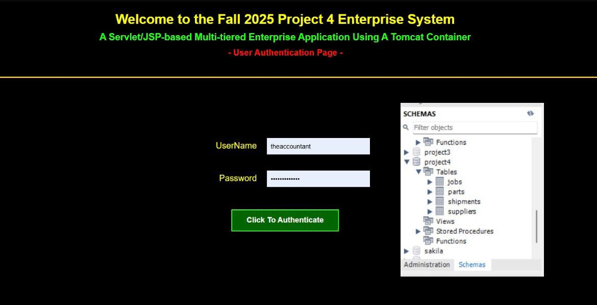

Three-Tier Distributed Enterprise Web Application

Project Description
This project is a multi-tier web application developed using Java Servlets, JSP, Apache Tomcat, and MySQL. The system follows a three-tier architecture, separating the presentation layer, application logic, and database layer to improve organization, security, and scalability.
The application includes a role-based authentication system that routes users to different interfaces depending on their access level, such as root, client, data-entry, and accountant users. Each role has specific permissions and capabilities, including executing SQL queries, submitting structured data through forms, and generating reports using stored procedures.
Server-side business logic is handled by servlets, including conditional updates based on shipment data, while the database enforces referential integrity through primary and foreign key constraints. All database interactions are securely managed using JDBC with proper error handling and validation.
Skills Learned
- Three-tier / distributed application architecture
- Java Servlets and JSP development
- Server-side business logic implementation
- Apache Tomcat configuration and deployment
- JDBC database connectivity
- Executing SQL commands from a web interface
- Using JDBC Statement, PreparedStatement, and CallableStatement
- Role-based authentication and authorization
- Managing multiple user access levels
- Calling stored procedures (RPCs)
- MySQL database integration
- Foreign key and composite key enforcement
- Error handling and validation in web applications
- Enterprise application design principles